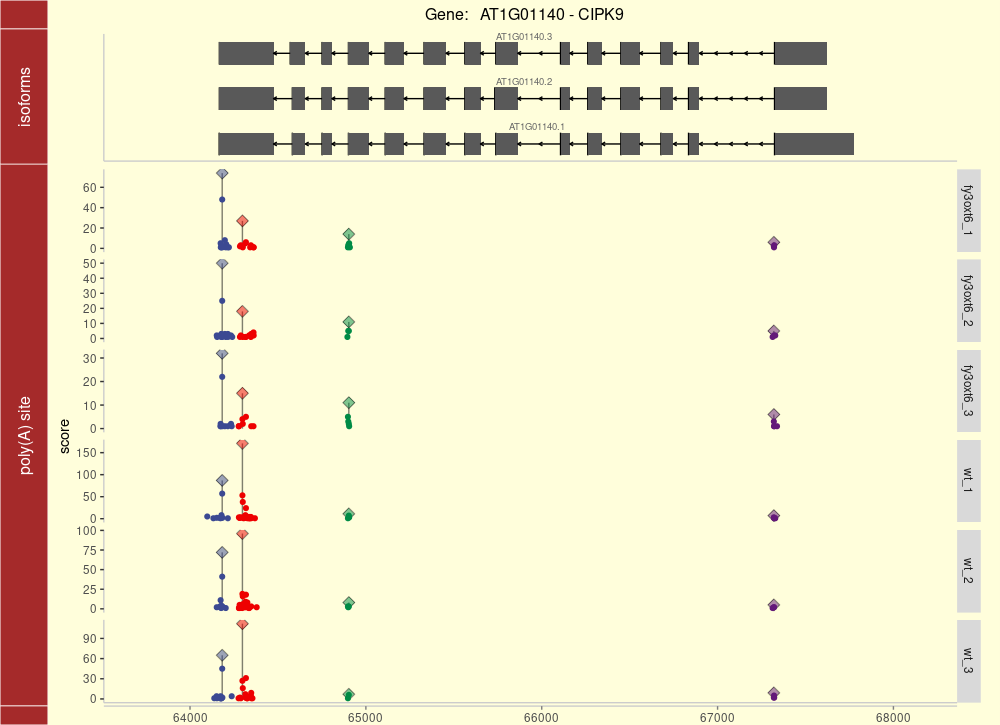
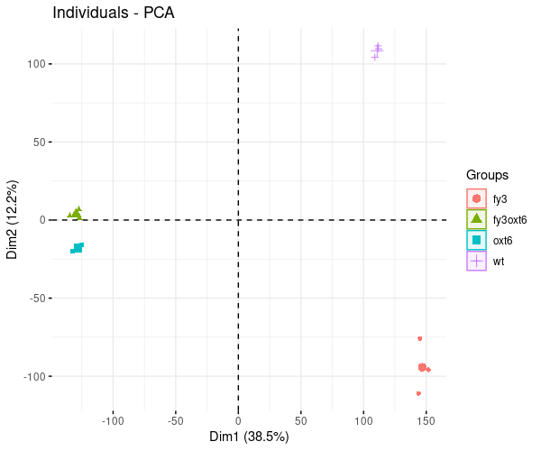
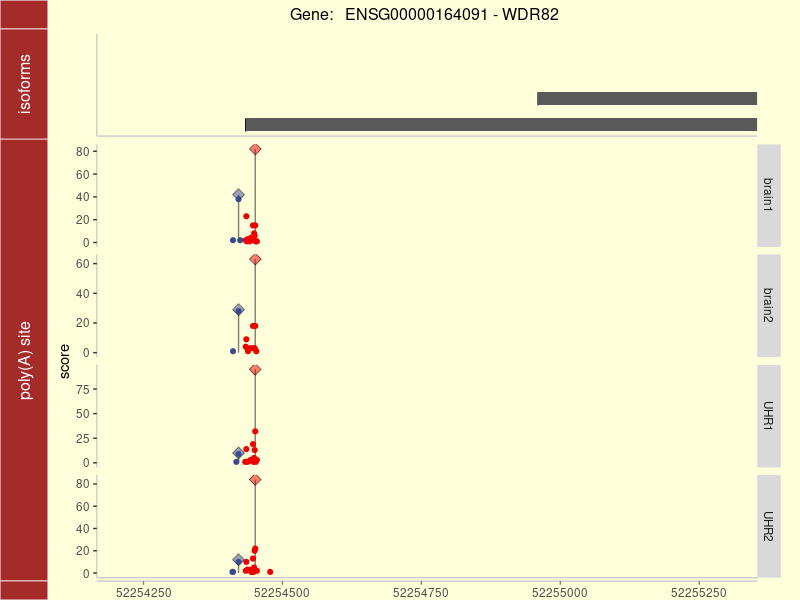
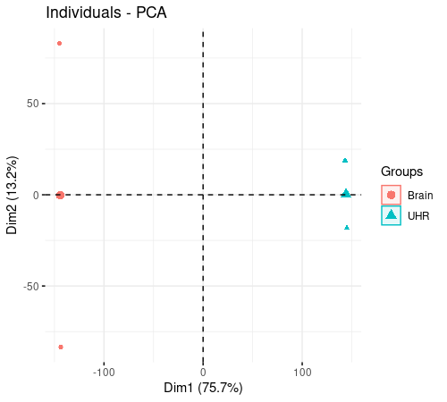

QuantifyPolyA: User Manual
Quantification of poly(A) sites from 3’ end sequencing data
Congting Ye
2026-11-05
Source:vignettes/QuantifyPolyA.Rmd
QuantifyPolyA.RmdWhat is QuantifyPolyA?
QuantifyPolyA is a complete and seamless R package for accurately quantifying poly(A) site usages under diverse biological conditions. It employs a weighted density peak clustering algorithm to address the innate microheterogeneity of cleavage and polyadenylation.
If you have any question or comment, please contact Dr. Congting Ye (yec@xmu.edu.cn). You can also report a bug at https://github.com/yec-bioinfo/QuantifyPolyA/issues.
citation("QuantifyPolyA")Installation
Install from GitHub
QuantifyPolyA is not distributed through CRAN. The recommended installation resolves all dependencies automatically:
if (!requireNamespace("remotes", quietly = TRUE)) {
install.packages("remotes")
}
remotes::install_github("yec-bioinfo/QuantifyPolyA")Bioconductor dependencies require R >= 4.0; remotes
installs them through BiocManager. The ggalt
package is hosted on GitHub rather than CRAN, and is declared in the
Remotes field of DESCRIPTION so that
remotes and pak pick it up automatically.
Install from a source tarball
Download QuantifyPolyA_0.4.0.tar.gz from the GitHub
releases page, then:
install.packages("QuantifyPolyA_0.4.0.tar.gz", repos = NULL, type = "source")R does not resolve dependencies when installing a
local tarball. Either use
remotes::install_local("QuantifyPolyA_0.4.0.tar.gz", dependencies = TRUE)
or install the packages listed in DESCRIPTION first.
How to run QuantifyPolyA
There are six major steps: (a) input preparation, (b) internal priming artifact removal, (c) poly(A) site clustering, (d) feature annotation, (e) APA dynamics detection, and (f) APA visualization.

The schematic diagram of QuantifyPolyA.
(a) Load raw poly(A) site data
Load the raw poly(A) site information extracted from 3’ end sequencing data.
Load all files located in a directory:
QpolyA <- Load.PolyA(dir = "./Test")Or load specified files:
QpolyA <- Load.PolyA(files = c(
"Control1.bed", "Control2.bed",
"Treatment1.bed", "Treatment2.bed"
))Arguments:
-
files: a character vector specifying the names of files containing poly(A) site information. Each file contains four columns:seqnames,strand,coordandscore. -
dir: a string specifying the directory of the files.
(b) Remove internal priming artifacts
Remove poly(A) sites that potentially result from internal priming events.
QpolyA <- Remove.IP(QpolyA, fasta = "Genome.fasta")Arguments:
-
QpolyA: aQuantifyPolyAobject containing all raw poly(A) sites. -
fasta: a string specifying the location and name of the corresponding genome file in FASTA format. -
flank_len: the neighborhood (in bp) searched on each side of a poly(A) site for a template poly(A) stretch. Default15. -
win_size: the size of the sliding window, in bp. Default10. -
min_A: the minimum number of consecutive adenines in a window for a site to be flagged as internal priming. Default8.
A site is called an internal priming artifact if the genomic sequence
around it contains a run of at least min_A adenines
(thymines on the minus strand) within any win_size-bp
window inside coord +/- flank_len.
Changed in 0.4.0. These three arguments previously
did not exist and the values were hard-coded
(flank_len = 10, win_size = 10,
min_A = 7). Because the defaults are now 15,
10 and 8, results are not identical to version
0.3.0. To reproduce the old behaviour:
QpolyA <- Remove.IP(QpolyA, fasta = "Genome.fasta",
flank_len = 10, win_size = 10, min_A = 7)(c) Cluster poly(A) sites
Cluster poly(A) sites into poly(A) site clusters (PACs) using a weighted density peak clustering algorithm.
QpolyA <- Cluster.PolyA(QpolyA, max.gapwidth = 24, mc.cores = 4)Arguments:
-
QpolyA: aQuantifyPolyAobject containing clean poly(A) sites. -
max.gapwidth: a cutoff limiting the maximum distance between two adjacent poly(A) sites in a PAC. Default24. -
mc.cores: the number of processors/cores used for clustering. Default4.
(d) Annotate and quantify poly(A) site clusters
Annotate PACs based on existing genome annotations and generate the PAC table for all experimental samples.
QpolyA <- Annotate.PolyA(QpolyA, gff = "Genome.annotation.gtf",
seq.levels = NA)Arguments:
-
QpolyA: aQuantifyPolyAobject containing clean poly(A) sites and PACs. -
gff: a genome annotation file in GFF/GTF format; GTF is recommended. -
seq.levels: a character vector of chromosome/contig names. Useful when the names in the genome file and the annotation file are not consistent.
Annotations are read with txdbmaker::makeTxDbFromGFF().
makeTxDbFromGFF() lived in GenomicFeatures before
Bioconductor 3.19 and was removed from it in Bioconductor 3.23, which is
why txdbmaker is now a dependency.
Optionally, PACs with low read support can be discarded before downstream analysis:
QpolyA <- Filter.PolyA(QpolyA, min_count = 10, min_sample = 1)(e) Quantify APA dynamics
Identify APA usage patterns of genes that differ significantly between two samples, treatments or conditions. Dynamics detection can be performed on different categories of poly(A) sites: canonical APA (PACs located in the 3’ UTR), non-canonical APA (PACs in intragenic regions excluding the 3’ UTR), and split APA (PACs recovered through the secondary clustering step).
The experimental design is described by a data.frame
whose row names are the sample names:
colData <- data.frame(
condition = c(rep("Control",2), rep("Treatment",2)),
type = "single-end"
)
rownames(colData) <- QpolyA@sample_namesAmong split PACs
split.APA <- Quantify.SplitAPA(
QpolyA, colData,
contrast = c("condition", "Control", "Treatment")
)Among canonical PACs
canonical.APA <- Quantify.CanonicalAPA(
QpolyA, colData,
contrast = c("condition", "Control", "Treatment")
)Canonical vs. non-canonical PACs
cnc.APA <- Quantify.CNCAPA(
QpolyA, colData,
contrast = c("condition", "Control", "Treatment")
)Across a whole gene
gene.APA <- Quantify.GeneAPA(
QpolyA, colData,
contrast = c("condition", "Control", "Treatment")
)Common arguments:
-
QpolyA: aQuantifyPolyAobject generated after clustering and annotation. -
colData: adata.framedescribing the experimental design. -
contrast: a three-element vector specifying the two conditions to compare, e.g.contrast = c("condition", "Control", "Treatment").
(f) Visualize poly(A) profiles
Visualize the poly(A) profiles of a specific gene across multiple samples.
library(rtracklayer)
anno <- import("Genome.annotation.gtf")
gene_id <- "XXXXXXXX"
dp <- Visualize.PolyA(QpolyA, anno, gene_id)
library(ggsci)
dp + scale_color_aaas() + scale_fill_aaas()Arguments:
-
QpolyA: aQuantifyPolyAobject containing clean poly(A) sites and the PAC table. -
anno: aGRangesobject of gene model information, generated for example withrtracklayer::import(). -
gene.id: a string indicating the gene to be visualized, e.g.gene.id = "ENSMUSG00000073490". -
sample.names: a character vector specifying the samples to display. All samples are shown if omitted. -
coord.lim: two numeric values specifying the left and right limits of the x-axis.
The returned object is a ggplot2 object that can be
customized with standard ggplot2 functions.
Demos
The demo datasets are available from the Files tab of the SourceForge project page.
Arabidopsis dataset
Prepare the data:
- Download
Arabidopsis_FY.zipfrom the SourceForge project page, the TAIR10 genomeTAIR10_chr_all.fasfrom TAIR, and the annotationArabidopsis_thaliana.TAIR10.45.gtf.gzfrom EnsemblPlants. - Move the three files to the working directory and unzip them.
library(QuantifyPolyA)
#1. Load raw poly(A) site data.
QpolyA <- Load.PolyA(dir = "./Arabidopsis_FY")
#2. Remove internal priming artifacts.
QpolyA <- Remove.IP(QpolyA, "TAIR10_chr_all.fas")
#3. Cluster poly(A) sites.
QpolyA <- Cluster.PolyA(QpolyA, max.gapwidth = 24, mc.cores = 16)
#4. Annotate and quantify poly(A) site clusters.
QpolyA <- Annotate.PolyA(
QpolyA, "Arabidopsis_thaliana.TAIR10.45.gtf",
seq.levels = as.character(unique(QpolyA@polyA$seqnames))
)
#5. Filter out PACs with low read count support.
QpolyA <- Filter.PolyA(QpolyA, min_count = 10, min_sample = 1)
#6. Quantify APA dynamics.
colData <- data.frame(
condition = c(rep("fy3",3), rep("fy3oxt6",3),
rep("oxt6",3), rep("wt",3)),
type = "single-end"
)
rownames(colData) <- QpolyA@sample_names
split.APA <- Quantify.SplitAPA(QpolyA, colData, contrast = c("condition", "wt", "oxt6"))
canonical.APA <- Quantify.CanonicalAPA(QpolyA, colData, contrast = c("condition", "wt", "oxt6"))
cnc.APA <- Quantify.CNCAPA(QpolyA, colData, contrast = c("condition", "wt", "oxt6"))
gene.APA <- Quantify.GeneAPA(QpolyA, colData, contrast = c("condition", "wt", "oxt6"))
#7. Visualize poly(A) profiles.
library(rtracklayer)
anno <- import("Arabidopsis_thaliana.TAIR10.45.gtf")
gene_id <- "AT1G01140"
dp <- Visualize.PolyA(QpolyA, anno, gene_id, sample.names = c("wt", "fy3oxt6"))
library(ggsci)
dp + scale_color_aaas() + scale_fill_aaas()
#8. Perform DESeq2 analysis.
res <- DESeq2.PolyA(QpolyA, colData)
library(DESeq2)
compare_wt_oxt6 <- results(res$DESeq2.Result,
contrast = c("condition", "wt", "oxt6"))
compare_wt_oxt6.df <- as.data.frame(compare_wt_oxt6)
summary(compare_wt_oxt6)
sum(compare_wt_oxt6$padj < 0.05, na.rm = TRUE)
res$PCA.Plot
Illustration of gene CIPK9 showing dynamic APA profiles between wild type (wt) and double mutant (fy3oxt6) samples.

The PCA plot based on the PAC matrix (Arabidopsis dataset).
Human dataset
Prepare the data:
- Download
Human_MAQC.zipfrom the SourceForge project page, the genomeHomo_sapiens.GRCh38.dna.primary_assembly.fa.gzand the annotationHomo_sapiens.GRCh38.101.gtf.gzfrom Ensembl. - Move the three files to the working directory and unzip them.
library(QuantifyPolyA)
#1. Load raw poly(A) site data.
QpolyA <- Load.PolyA(dir = "./Human_MAQC")
#2. Remove internal priming artifacts.
QpolyA <- Remove.IP(QpolyA, "Homo_sapiens.GRCh38.dna.primary_assembly.fa")
#3. Cluster poly(A) sites.
QpolyA <- Cluster.PolyA(QpolyA, max.gapwidth = 24, mc.cores = 16)
#4. Annotate and quantify poly(A) site clusters.
QpolyA <- Annotate.PolyA(QpolyA, "Homo_sapiens.GRCh38.101.gtf")
#5. Filter out PACs with low read count support.
QpolyA <- Filter.PolyA(QpolyA, min_count = 10, min_sample = 1)
#6. Quantify APA dynamics.
colData <- data.frame(
condition = c(rep("Brain",2), rep("UHR",2)),
type = "single-end"
)
rownames(colData) <- QpolyA@sample_names
split.APA <- Quantify.SplitAPA(QpolyA, colData, contrast = c("condition", "Brain", "UHR"))
canonical.APA <- Quantify.CanonicalAPA(QpolyA, colData, contrast = c("condition", "Brain", "UHR"))
cnc.APA <- Quantify.CNCAPA(QpolyA, colData, contrast = c("condition", "Brain", "UHR"))
gene.APA <- Quantify.GeneAPA(QpolyA, colData, contrast = c("condition", "Brain", "UHR"))
#7. Visualize poly(A) profiles.
library(rtracklayer)
anno <- import("Homo_sapiens.GRCh38.101.gtf")
gene_id <- "ENSG00000164091"
dp <- Visualize.PolyA(QpolyA, anno, gene_id, coord.lim = c(52254310,52255210))
library(ggsci)
dp + scale_color_aaas() + scale_fill_aaas()
#8. Perform DESeq2 analysis.
res <- DESeq2.PolyA(QpolyA, colData)
library(DESeq2)
compare_Brain_UHR <- results(res$DESeq2.Result,
contrast = c("condition", "Brain", "UHR"))
compare_Brain_UHR.df <- as.data.frame(compare_Brain_UHR)
summary(compare_Brain_UHR)
sum(compare_Brain_UHR$padj < 0.05, na.rm = TRUE)
res$PCA.Plot
Illustration of gene PCNX1 showing dynamic APA profiles between brain and UHR samples.

The PCA plot based on the PAC matrix (human dataset).
Inputs
The main inputs are the raw poly(A) data (one file per sample) containing the genomic coordinates of poly(A) sites, together with the corresponding genome sequence and genome annotation files.
Outputs
Output of preprocessing (steps a-d)
A QuantifyPolyA object with five slots:
| Slot | Explanation |
|---|---|
sample_names |
Character vector of sample names, taken from the input file names |
pre.polyA |
List of un-clustered poly(A) sites |
polyA |
data.frame of PACs generated by weighted density peak
clustering |
simple.clusters |
data.frame of PACs generated by k-nt iterative
clustering |
split.clusters |
data.frame of the split PACs only |
Output of APA dynamics detection (step e)
A tibble containing APA dynamics metrics for all split PACs or genes:
| Column | Explanation |
|---|---|
split_label or gene_id
|
Group label of the split PACs, or a gene ID |
pd |
Percentage difference, measuring dynamics induced by condition changes |
r |
Averaged Pearson correlation coefficient, indicating lengthening/shortening |
p.value |
Statistical test p-value |
Session information
sessionInfo()
#> R version 4.6.2 (2026-10-29)
#> Platform: x86_64-pc-linux-gnu
#> Running under: Ubuntu 24.04.5 LTS
#>
#> Matrix products: default
#> BLAS: /usr/lib/x86_64-linux-gnu/openblas-pthread/libblas.so.3
#> LAPACK: /usr/lib/x86_64-linux-gnu/openblas-pthread/libopenblasp-r0.3.26.so; LAPACK version 3.12.0
#>
#> locale:
#> [1] LC_CTYPE=C.UTF-8 LC_NUMERIC=C LC_TIME=C.UTF-8
#> [4] LC_COLLATE=C.UTF-8 LC_MONETARY=C.UTF-8 LC_MESSAGES=C.UTF-8
#> [7] LC_PAPER=C.UTF-8 LC_NAME=C LC_ADDRESS=C
#> [10] LC_TELEPHONE=C LC_MEASUREMENT=C.UTF-8 LC_IDENTIFICATION=C
#>
#> time zone: UTC
#> tzcode source: system (glibc)
#>
#> attached base packages:
#> [1] stats graphics grDevices utils datasets methods base
#>
#> loaded via a namespace (and not attached):
#> [1] digest_0.6.39 desc_1.4.3 R6_2.6.1 fastmap_1.2.0
#> [5] xfun_0.62 cachem_1.1.0 knitr_1.52 htmltools_0.5.9
#> [9] png_0.1-9 rmarkdown_2.32 lifecycle_1.0.5 cli_3.6.6
#> [13] sass_0.4.10 pkgdown_2.2.1 textshaping_1.0.5 jquerylib_0.1.4
#> [17] systemfonts_1.3.2 compiler_4.6.2 tools_4.6.2 ragg_1.5.2
#> [21] bslib_0.12.0 evaluate_1.0.5 yaml_2.3.12 otel_0.2.0
#> [25] jsonlite_2.0.0 rlang_1.3.0 fs_2.1.0 htmlwidgets_1.6.4